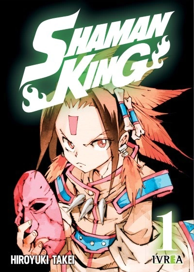

Shaman King

Los shamanes son personas que pueden interactuar con los dioses, los espíritus y las almas de los difuntos.
Yoh tiene ese poder y quiere convertirse en el rey shaman, alguien capaz de establecer contacto con los Grandes Espíritus,
lo que le permitiría cambiar el mundo a su antojo. Para conseguirlo, tendrá que hacerse con un espíritu que lo acompañe y
participar en el Shaman Fight: un torneo que se celebra cada 500 años, consiguiendo por el camino un buen grupo de aliados
y amigos.
Aunque también encontrará rivales de lo más variopintos y siniestros, algunos con intenciones bastante diferentes a las de
Yoh.